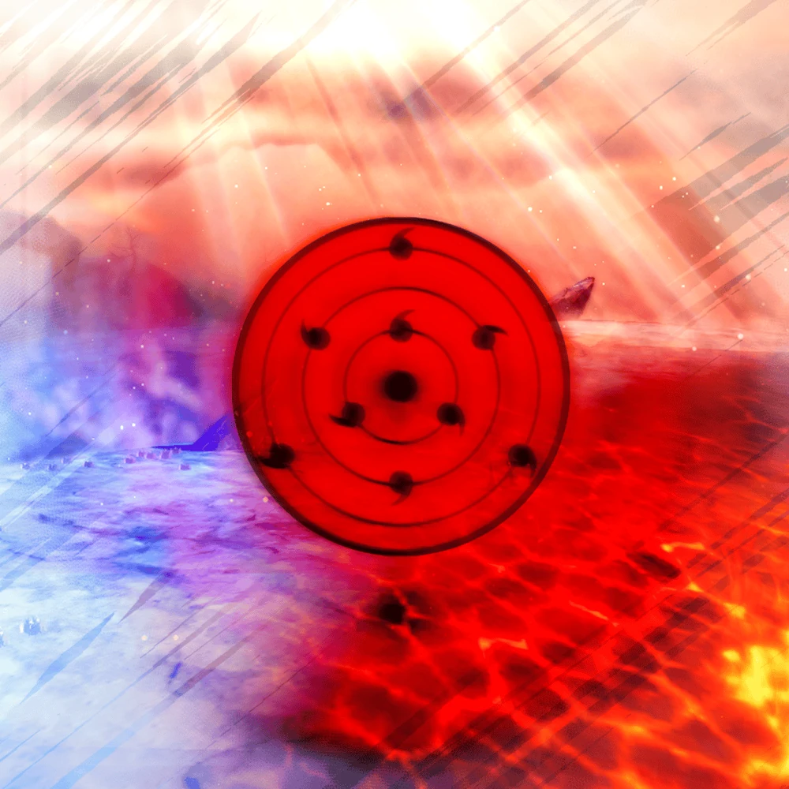

Escanor
- Dano Bruto Sem Monarca lvl 60 Stats Godly:
- ⚔️ Dmg: 183.010
- 🏹 Rng: 56
- ⚡ Spa: 9
- 🗡️ Dps: 8.765
- Dano Bruto Com Monarca lvl 60 Stats Gofly:
- ⚔️ Dmg: 732.042
- 🏹 Rng: 59
- ⚡ Spa: 8.1
- 🗡️ Dps: 38.955
- Custo Para Colocar a unidade no Max: 170.520 ¥
- Dano Lion's Sin:
- Sem Monarca: ⚔️ Dmg: 732.040
- Com Monarca: ⚔️ Dng: 2.928.168
- Dano Ultimate:
- Sem Monarca: ⚔️ Dmg: 274.515
- Com Monarca: ⚔️ Dmg: 1.098.063
- Dano Lion's Sin + Ultimate:
- Sem Monarca: ⚔️ Dmg: 1.098.060
- Com Monarca: ⚔️ Dmg: 4.392.252

Escanor Wiki
Gogeta
- Dano Bruto Sem Monarca lvl 60 Stats Godly:
- ⚔️ Dmg: 49.303
- 🏹 Rng: 56
- ⚡ Spa: 7.9
- 🗡️ Dps: 6.261
- Dano Bruto Com Monarca lvl 60 Stats Godly:
- ⚔️ Dmg: 197.210
- 🏹 Rng: 59
- ⚡ Spa: 7.1
- 🗡️ Dps: 27.825
- Custo para Colocar a unidade no max: 182.300 ¥
- Gotchyal e Clone tem o mesmo dano:
- Sem Monarca: ⚔️ Dmg: 73.954
- Com Monarca: ⚔️ Dmg: 295.815
- Clone + Gotchyal:
- Sem Monarca: ⚔️ Dmg: 147.908
- Com Monarca: ⚔️ Dmg: 591.630
Gogeta Wiki
Sung Woo
- Dano Bruto Sem Monarca lvl 60 Stats Godly:
- ⚔️ Dmg: 40.428 x 3 = 121.284
- 🏹 Rng: 52
- ⚡ Spa: 7
- 🗡️ Dps: 5.775 x 3 = 17.325
- Dano Bruto Com Monarca lvl 60 Stats Godly:
- ⚔️ Dmg: 161.712
- 🏹 Rng: 54
- ⚡ Spa: 6.3
- 🗡️ Dps: 25.669
- Custo para Colocar a unidade no max: 105.700 x 3= 317.100 ¥
- Mana perdida e Sem nenhum summon:
- Sem Monarca: ⚔️ Dmg: 158.209
- Com Monarca: ⚔️ Dmg: 209.685
- Summon morrer dentro do range:
- Sem Monarca: ⚔️ Dmg: 181.926
- Com Monarca: ⚔️ Dmg: 242.028
- Song jinwu:
- Sem Monarca: ⚔️ Dmg: 485.136
- Com Monarca: ⚔️ Dmg: 646.8481
- Igros:
- Sem Monarca: ⚔️ Dmg: 727.704
- Com Monarca: ⚔️ Dmg: 970.272
- Duo:
- Sem Monarca: ⚔️ Dmg: 1.212.840
- Com Monarca: ⚔️ Dmg: 1.617.120
Sung Woo Wiki
Kaguya
- Dano Bruto Sem Monarca lvl 60 Stats Godly:
- ⚔️ Dmg: 54.233
- 🏹 Rng: 51
- ⚡ Spa: 8
- 🗡️ Dps: 6.779
- Dano Bruto Com Monarca lvl 60 Stats Godly:
- ⚔️ Dmg: 216.931
- 🏹 Rng: 53
- ⚡ Spa: 7.2
- 🗡️ Dps: 30.129
- Custo para Colocar a unidade no max: 151.000 ¥
- Dano Total Usando os Dominios de Forma certa:
- Sem Monarca: ⚔️ Dmg: 164.731
- Com Monarca: ⚔️ Dmg: 658.926
- Ativa Beast Explosion:
- Sem Monarca: ⚔️ Dmg: 542.330
- Com Monarca: ⚔️ Dmg: 2.169.310
- Ativa Beast Explosion + Dominios: 
- Sem Monarca: ⚔️ Dmg: 1.647.310
- Com Monarca: ⚔️ Dmg: 6.589.260
Kaguya Wiki
Diavolo
- Dano Bruto Sem Monarca lvl 60 Stats Godly:
- ⚔️ Dmg: 59.163
- 🏹 Rng: 43
- ⚡ Spa: 5.7
- 🗡️ Dps: 10.402
- Dano Bruto Com Monarca lvl 60 Stats Godly:
- ⚔️ Dmg: 236.652
- 🏹 Rng: 45
- ⚡ Spa: 5.1
- 🗡️ Dps: 46.232
- Custo para Colocar a unidade no max: 115.000 ¥
- Dano em Boss:
- Sem Monarca: ⚔️ Dmg: 68.037
- Com Monarca: ⚔️ Dmg: 272.149
- Dano em inimigos Slowed
- Sem Monarca: ⚔️ Dmg: 76.911
- Com Monarca: ⚔️ Dmg: 307.647
- Complete Erasure e Esquiva:
- Sem Monarca: ⚔️ Dmg: 88.744
- Com Monarca: ⚔️ Dmg: 354.978
- Dano em Boss + Dano em inimigos slowed + Complete erasure e esquiva:
- Sem Monarca: ⚔️ Dmg: 233.692
- Com Monarca: ⚔️ Dmg: 934.774
Diavolo Wiki
Melhores Danos
Como Sung dá pra colocar 3, se considerar o total dos 3 ele passa Kaguya e Diavolo.


(combinações máximas listadas, como Ultimates, Domínios etc.)


- 🔥 Escanor é o rei do dano bruto puro.
- 🌌Kaguya domina totalmente o dano com habilidades + Monarca (6.58M!).
- 👤 Sung Woo escala bem com habilidades em grupo, mas fica atrás de Escanor/Kaguya.
- 🌀 Diavolo e Gogeta são bem mais fracos em picos máximos.

Todos os Dados Usados Foram Calculados Com Base Na Wiki